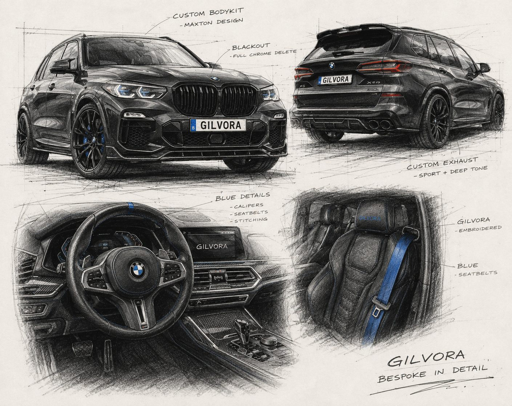

Carbon Onderdelen
Echt carbon, in de juiste weefselrichting, op de plekken waar het klopt. Niet overal — carbon werkt als accent, niet als thema.

Waarom dit langer duurt bij ons
Carbon is het makkelijkste materiaal om verkeerd te gebruiken. Een auto met carbon spiegelkappen, carbon spoiler, carbon diffuser, carbon grille én carbon sierlijsten leest niet duur — hij leest onrustig. Twee of drie carbon accenten op de juiste plekken doen meer dan tien.
Er is ook echt en niet-echt. Veel van wat als carbon verkocht wordt, is kunststof met een carbonprint eronder en een dikke laag lak erover. Je herkent het aan het gewicht, aan de manier waarop het licht vangt, en aan de naad: bij echt weefsel loopt het patroon dóór over de vorm, bij een print loopt het plat door.
Wij werken met prepreg — weefsel dat voorgedrenkt is in hars en onder druk en warmte uitgehard. Dat is duurder en het is het waard: het is lichter, sterker en het weefsel blijft strak in de bocht in plaats van uit te rekken.
Van afspraak tot sleutel
Vier stappen. Je weet op elk moment waar je auto staat en waarom.
Selectie
Welke onderdelen versterken de lijn die je al hebt? We kiezen bewust weinig. Meestal beginnen we met spiegelkappen en een ducktail — die twee veranderen het meest per euro.
Controle
Elk onderdeel wordt bij aankomst gecontroleerd op weefselrichting, clearcoat en pasvorm. Wat niet klopt, gaat terug naar de leverancier voor het je auto raakt.
Passen
Droog gemonteerd, uitgelijnd op de sluitnaden van je auto. Bij spiegelkappen controleren we ook of de klemmen niet vervormen — die breken anders bij de eerste wasstraat.
Montage
Definitief bevestigd, naden gecontroleerd, en waar nodig een laag keramische coating over het carbon om vergeling door UV tegen te gaan.
Zelden staat dit alleen
Een transformatie is een totaalplaatje. Dit zijn de ingrepen die het vaakst samen met carbon gaan.

Carbon Onderdelen bij Gilvora in Kaulille (Bocholt) — klanten uit heel Limburg, waaronder Hasselt, Genk, Bree, Peer, Pelt, Lommel, Beringen en Maaseik, en uit de rest van Vlaanderen. Uitsluitend op afspraak.
Klaar om te beginnen?
Stuur ons je auto, je budget en het gevoel dat je zoekt. Je krijgt een eerlijk plan terug — ook als dat betekent dat we je aanraden iets anders te doen dan je in gedachten had.